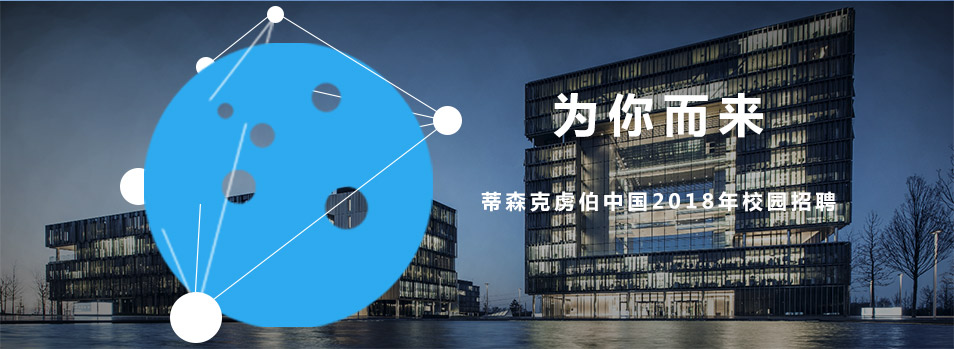

蒂森克虏伯集团
蒂森克虏伯集团在全球近80个国家拥有逾156,000名员工，年销售额达390亿欧元，业务覆盖汽车、物流、机械、钢铁、电梯及工厂技术等各领域。无论身在何处，也无论业务规模，在蒂森克虏伯，我们总是一同奋斗。我们不但拥有200余年的行业经验，更掌握着最尖端的科技。我们的职位向您敞开大门，这不仅会激发您的工作热情，同时也是对您工作技巧的一种挑战。
蒂森克虏伯在中国
蒂森克虏伯始建于1811年，总部位于德国西部工业重镇ESSEN。蒂森克虏伯以钢铁业务起家，两百多年来一直稳步发张壮大，迄今已成为跨行业多元化的工业巨头，服务于城市建设、汽车制造、航空、能源、采矿及化工等多领域的客户，其规模位列世界500强企业。做为蒂森克虏伯集团的主要海外投资市场，目前集团在华拥有30余家公司、合资企业和代表处及近一万七千员工。2015/16财年中国区营业额约26亿欧元。 蒂森克虏伯集团在华共有五大业务单元，包括钢铁欧洲部、料服服务部、电梯技术部、机械零部件技术部与工业解决方案部，产品涵盖有色金属材料、升降梯、扶梯、转向系统、回转支承、工厂技术支持、物料搬运设备等。通过引入高新技术，蒂森克虏伯集团致力于同中国一道发展，共创未来。
公司地址： 北京市朝阳区朝阳门外大街16号中国人寿大厦22层
电话 ： 010-8507 5666
 未经51job.com 同意，不得转载本网站之所有招聘信息及作品；无忧工作网版权所有©1999- 2017
未经51job.com 同意，不得转载本网站之所有招聘信息及作品；无忧工作网版权所有©1999- 2017